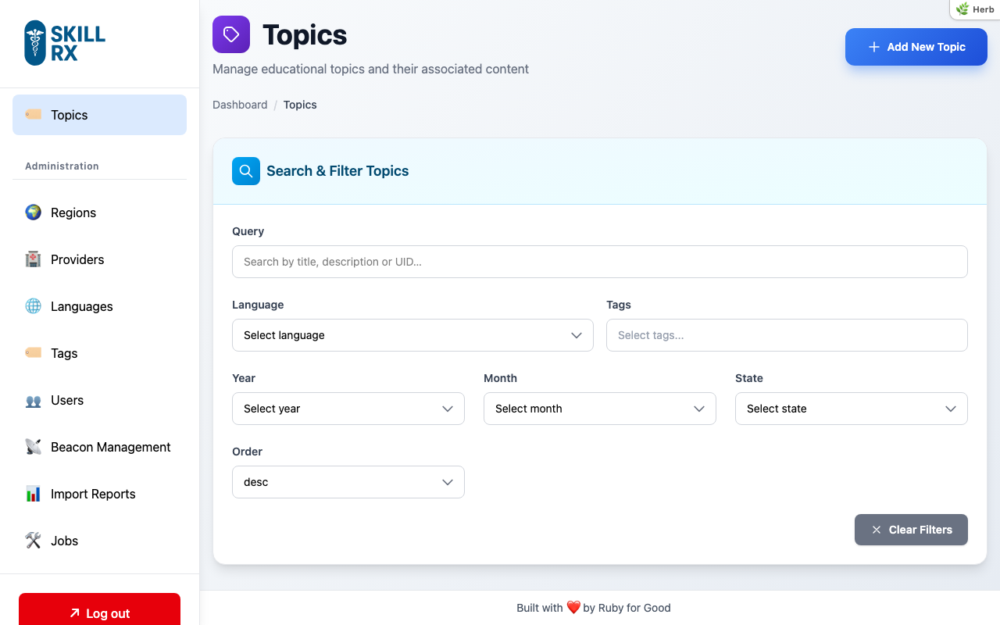

| Title | Description | Language | UID | Documents | State | Actions |
|---|---|---|---|---|---|---|

| Title | Description | Language | UID | Documents | State | Actions |
|---|---|---|---|---|---|---|
How a row in a SkillRx list offers its actions. Topics comes first because it's the screen everyone starts on; whatever you choose here is used on every list (beacons, providers, regions, languages, tags, users, import reports).
| What it is | Who does this | Cost | |
|---|---|---|---|
| A: title links, Edit button (recommended) | The topic's title is the link to view it. Edit is a quiet button at the end of the row, named for its row ("Edit Introduction to English") for screen readers. | GitHub (issues, repositories), Shopify Polaris index tables, Linear. | Two actions, one of them the title itself, so nothing hides behind a menu. Archive and delete stay on the topic's page, one click further, which is where they are today. |
| B: ⋯ menu | View, Edit, Archive and Delete in a menu at the end of the row. | IBM Carbon's overflow menu, Salesforce row actions, Google Drive. | Every action is one click from the list, including archive and delete, but every action is now two clicks, and none is visible until you open the menu. |
| C: icon buttons | An eye and a pencil, with tooltips and accessible names. | Atlassian Jira, many admin templates. | Compact, but icons have to be learned, and need a tooltip each (more to build and test). |
Why A: SkillRx's list has two row actions, View and Edit, and the same two on every row. A menu earns its place when there are more actions, or when they vary from row to row; neither is true here. Making the title the link is what people expect from a list, and it removes the bright blue and gray button pair from every row, which is most of what makes today's table busy.
These follow the design system's rules, so they aren't choices:
Not changed: what the filters do, the provider switcher for people who work with more than one provider (it moves next to the heading), and pagination.